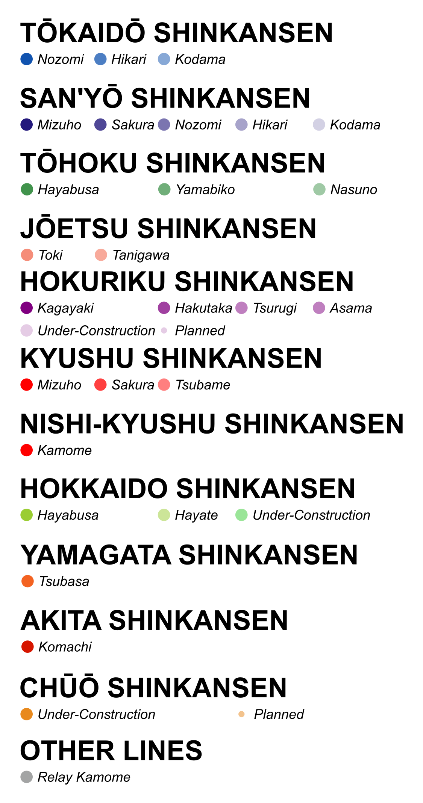
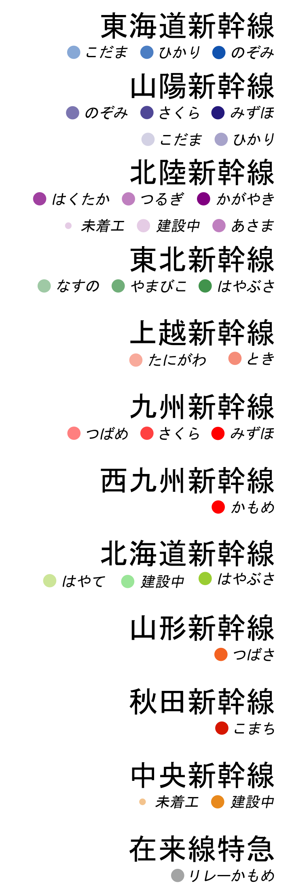
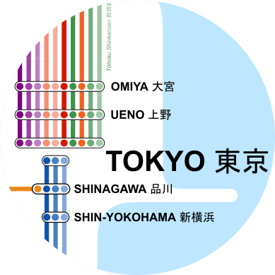
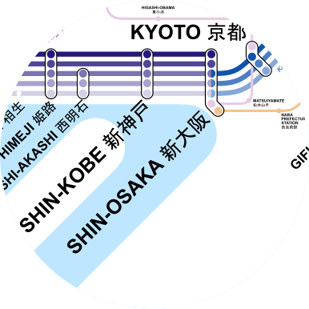
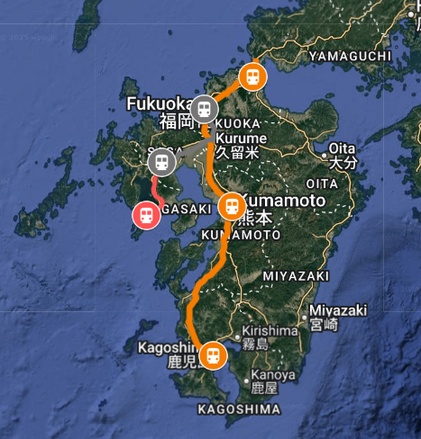
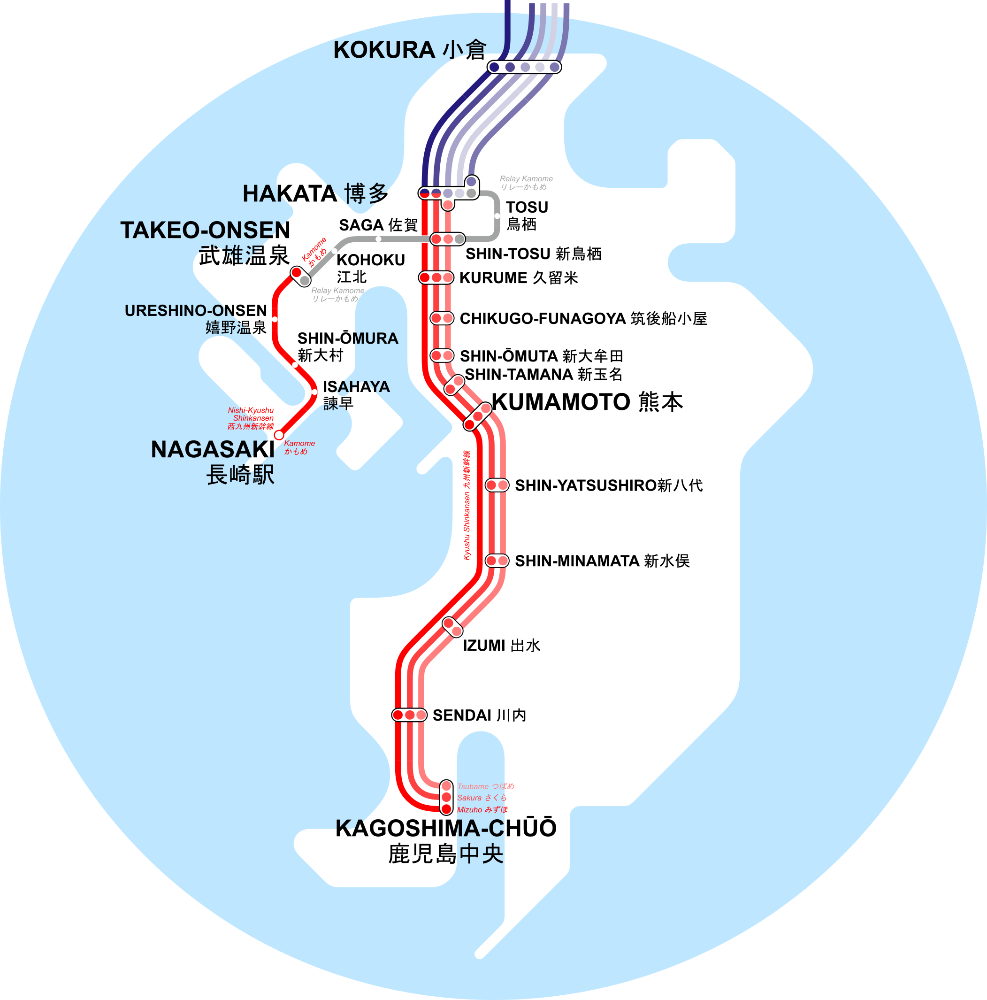

MAP OF SHINKANSEN HIGH SPEED RAIL NETWORK
MAP BREAKDOWN


-All the labels are in English and Japanese.

-Greater Tokyo Area remains the most busy region with Tokyo, Ueno, Shinagana and Omiya station.
-Tokyo Station alone has 13 shinkansen service in total.
-Tokyo Station alone has 13 shinkansen service in total.

-Keihanshin is another major transportation hub with the cities of Osaka, Kyoto and Kobe.
-Every train passing through these stations have to take a halt.
-Every train passing through these stations have to take a halt.


-The geographical routes was identified using Google Maps.
-The stations were equally placed alone the lines.